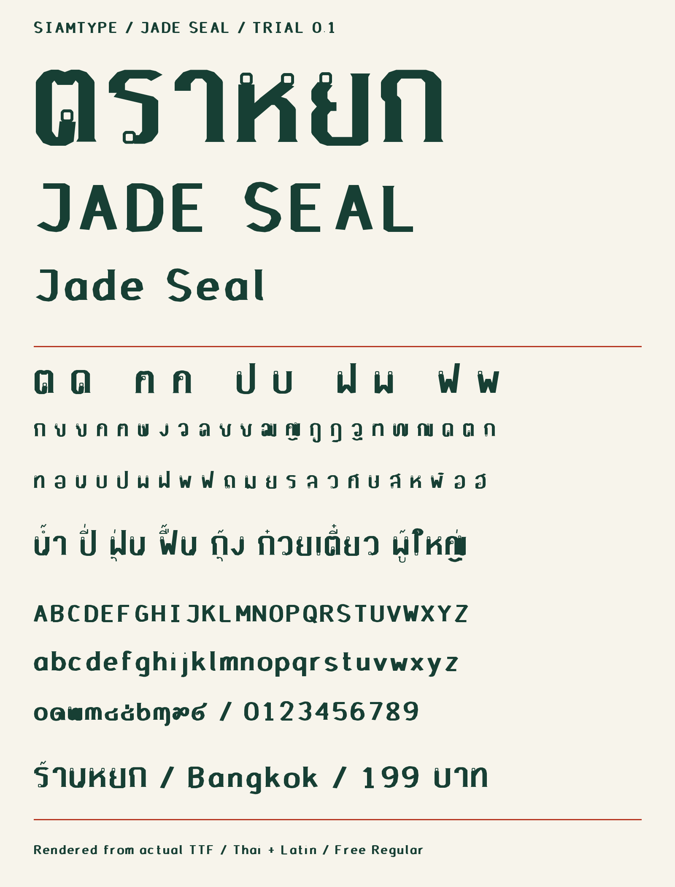

ตราหยก
Jade Seal / Thai & Latin
เส้นเหลี่ยมคมแบบงานสลัก สำหรับป้ายและหัวเรื่อง
ไทย 44 พยัญชนะ พร้อมสระ–วรรณยุกต์ อังกฤษตัวใหญ่และตัวเล็กจริง
รุ่นนี้ใช้ฟรีได้ทั้งงานส่วนตัวและงานออกแบบเชิงพาณิชย์ ยังไม่มีชุดเสียเงินของตราหยก
พัฒนาจากทิศทางภาพร่าง แต่รูปอักษรไม่ได้เหมือนภาพแนวคิดทุกเส้น โปรดดูตัวอย่างจริงด้านล่างก่อนดาวน์โหลด
ลองพิมพ์
กำลังโหลดฟอนต์…
ชุดอักษรที่รองรับ
181 อักขระ · ไทย 44 ตัว · A–Z 26 ตัว · a–z 26 ตัว · สระและวรรณยุกต์ · เลขไทยและอารบิก · เครื่องหมายพื้นฐาน
ABCDEFGHIJKLMNOPQRSTUVWXYZ
abcdefghijklmnopqrstuvwxyz
๐๑๒๓๔๕๖๗๘๙ / 0123456789
เป็นตัวอักษรไทยและอังกฤษกลิ่นอายจีน ไม่ได้มีชุดอักษรภาษาจีน
ภาพที่พิมพ์จากไฟล์ TTF จริง

ติดตั้งและสิทธิ์ใช้งาน
แตก ZIP แล้วติดตั้งไฟล์ TTF หรือ OTF อย่างใดอย่างหนึ่ง ชื่อฟอนต์ในโปรแกรมคือ SIAMTYPE Jade Seal ส่วน WOFF2 ใช้สำหรับเว็บไซต์
อนุญาตให้ออกแบบงานส่วนตัวและเชิงพาณิชย์ รวมงานลูกค้า ป้าย เสื้อ และโปสเตอร์ แบ่งปันชุดฟรีเดิมพร้อมเครดิตและใบอนุญาตได้ ห้ามขายต่อไฟล์ฟอนต์
ตรวจโครงสร้างและการจัดวางด้วย fontTools / HarfBuzz 1,775 ข้อความต่อไฟล์ TTF/OTF แล้ว แต่ยังไม่ได้ทดสอบ Adobe, Office, Canva หรือการพิมพ์จริง ควรตรวจข้อความในโปรแกรมที่จะใช้ก่อนผลิตงาน